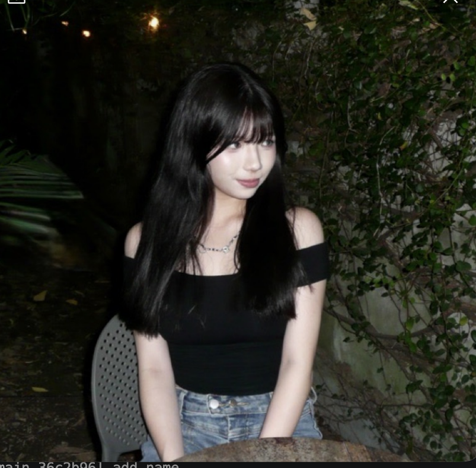
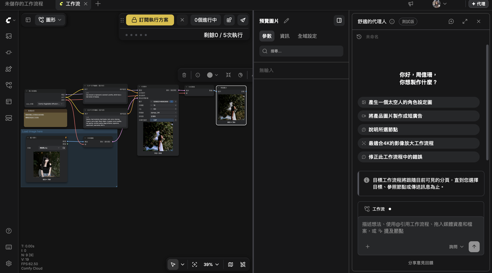

Use clouds to represent a woman's profile, which has a real sense of beauty.
lowres, bad anatomy, bad hands, text, error, missing fingers, extra digit, fewer digits, cropped, worst quality, low quality, normal quality, jpeg artifacts, signature, watermark, username, blurry
經過這次使用此程式乘乘圖片的經驗，讓我從一開始 的不知道如何下提示詞，導致圖片城城不出我想要的效 果，到我慢慢掌握該如和下提示詞，最終成估生成出我 想要的圖片，這個過程讓我學會了如何表達想法以及 訓練耐心。